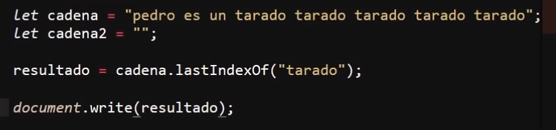
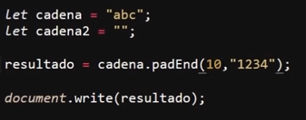

Metodos de Cadenas
Los metodos de cadenas son dibersos metodos que nos permiten modificar y manipular los valores de una cadena de texto, exisiten multitud de metodos, los más comunes y esenciales son:
Metodos para Buscar Dentro de Cadenas
Concat()
-
Se trata de un metodo para concatenar string, debido a esto no funciona con ningun otro tipo de variable, en sí su funcionameiento es muy similar al de el simbolo "+, po lo que simplete se trata de una alterativa a este, con la diferencia de que en el caso de que se ingrese variables diferentes a un string simplemte no va a funcionar
Ejemplo

Resultado

Nota: Forzar la varible como String tambien funcona con el "concat" tal como se puede ver en el ejemplo.
StartWith()
-
Este metodo determina si una cadena empieza con los mismos caracterires que otra, de ser así devuelve "true", de lo contrario devuelve "false"
Ejemplo
Resultado
En este ejemplo la primera cadena empieza con los mismos caracteres que la segunda, por lo que el resultado es "true", sin embargo este metodo es de caracter estricto, por lo tanto si ambas cadenas se diferencian en algo se dispara el resultado "false", por ejemplo, si se añade un espacio al inicio de añguna de las dos cadenas o si se se añade algun caracter al final de estas.
EndsWith()
-
Este metodo devuelve "true" si una cadena termina con los mismos caracteres que otra, de lo contrario devuelve "false".
Ejemplo
Resultado
Este metodo se asemeja mucho al anterior, por lo que tambien es de caracter estricto, eso quiere decir que si se ingresa algun caracter que diferencie el final de ambas cadenas se dispara el "false" como resultad.
Includes()
-
Si una cadenase puede encontrar dentro de otra devuelve "true", de lo contrario devuelve "false", en otras palabras este metodo no diferencia en que parte de la cadena se ecuentra, simplemte determina el si se encuentra o no dentro de otra.
Ejemplo
Resultado
En este ejemplo la cadena "dalto" se encuentra dentro de la primera cadena por lo que el resultado es "true", este metodo es estricto, por lo que del mismo modo que en los metodos anteriores, si se ingresa un caracter que genere alguna diferencia entre las dos cadenas el resultado será "false"
IndexOf()
-
Este metodo exactamete igual que el anterior, con la diferencia de que este no retorna valores booleanos, en su lugar retorna el la posición en la que se encuentra el primer caracter de la cadena que esta siendo buscada dentro de la otra.
Ejemplo
Resultado
Es necesario recordar que los datos "strings" realmete son como un array, en los que se concatenan un valor detras de otro, por lo que la numeración (posición) en la que esta guardado dicho caracter es el dato que retorna este metodo, por lo anto el primer caracter de la cadena se encientra en la posición "19" dentro de la primera cadena.
Una particularidad de este metodo es que en el caso de que no se encuentre ningun caracter dentro de la cadena este metodo no retorna "false", en su lugar retorna "-1" de la siguiente manera:
Ejemplo
Resultado
LasIndexOf()
-
Este metodo es igual que el anterior con la diferencia de que este se aplica en aquellas ocaiones en las que la cadena se repita más de una vez en el interior de la otra, entre todas estas repeticiones, este metodo devolvera la posicioón del primer caracter de la ultima coincidencia de la cadenas:
Ejemplo

Resultado
En este ejemplo el rsultado es "40" ya que esta es la posición del caracter "t", el cual es el primer caracter de la cadena "tarado" en contrada por ultima vez dentro de la cadena principal.
Metodos para Rellenar Cadenas
Repeat()
-
Este metodo permite repetir una cadena las veces que sean indicadas.
Ejemplo
Resultado
Al emplear este metodo es util tener en cuanta que ingresar un valor negativo como numero de repeticiones arrojara un error de rango, a la vez que ingresar un numero decimal hara que este se convierta en entero y se ejecute dicha cantidad de repeticiones.
Metodos de Cadenas Experimentales
Estos metodos como tal aun no forman parte del standar que todos los navegadores siguen, por lo que no todos los navegadores las reciben, haciendo necesario revisar la compatibilidad con estos, sin embargo estan propuestas para el standar, por lo que puede que en un futuro cercano lleguen a formar parte de este.
PadStart()
-
Este metodo permite tanto definir la cantidad de caracteres que se desea que posea una cadena como definir el con que caracteres se quiere rellenar estos espacios, este metodo añade los nuevos caracteres al inicio de la cadena y los repite las veces que hagan falta hasta que se cumple con el numero de caracteres establecido.
Ejemplo
Resultado
En este ejemplo se genero una primera cadena de tres(3) caracteres, se definio el metodo "padStart" para añadir el caracter "a" hasta que la cadena tenga una duración de seis (6) caracteres.
Nota: esta metodo toma en cuanta los caracteres horiginales de la cadena para el conteo de la extención de la cadena.
Nota: si la cadena original supera el numero de caracteres establecido entoces el metodo no añadira ningun otro caracter a esta cadena.
PadEnd()
-
Este metodo es exactamente igual que el anterior con la diferencia de que en vez de incluir los nuevos caracteres en al inicio de la cadena lo hará al final de esta.
Ejemplo

Resultado
Metodos para Modificar la Cadena
Split()
-
Este metodo permite dividir una cadena en diferentes porciones y almacenarla en un array, por lo tanto lo que devuelve este metodo es un array con las diferentes porciones de la cadena original almacenada dentro de este.
Para hacer esto, el metodo necesta que se defina algun caracter como punto de referencia para dividir la cadena, por ejemplo se puede indicar que cada vez que el metodo encuentre un espacio haga un corte en la cadena, como de la siguiente forma:
Ejemplo
Resultado
En este ejemplo cada vez que el metodo encuentre un espacio se generara un corte en la cadena por lo tanto se almacenara una palabra en cada posición del array, en el ejemplo como resultado se hace llamado del dato almacenado en la segunda posición.
Un especto a tener en cuenta es que aquel caracter que se emple como punto de referencia para generar los cortes de la cadena no seran almacenado dentro del array.
Ejemplo
Resultado
Substring()
-
Este metodo permite generar un nuevo "string" apartir del original, en otras palabras estemetodo permite "cortar" una sección de la cadena original y generar una nueva apartier de la sección cortada, para esto el metodo permite definir las posiciones de los caracteres en las que se realizara los cortes, tanto el de inicio como el de cierre.
Para lo cual el metodo requiere de dos datos que hacen referencia a la posición de los caracteres de la cadena, en los cuales el primer dato indica el primer caracter incluido mientras que el segundo indica el caracter en el que se realiza el corte, por lo tanto el segudo caracter no sera incluido dentro del nuevo array.
Ejemplo
Resultado
En este ejemlo de la cadena origial se define que se genere un nuevo array que abarca desde la posición "0" hasta la "2" (sin inclurla), por lo que el nuevo array desipondra de los caracteres en la posición "0" y "1".
ToLowerCase()
-
Este metodo es enrealidad muy simple, su función es la de convertir cualquier caracter en mayuscula de la cadena a minuscula, por lo tanto retorna la misma cadena pero con todos sus caracteres en munusculas
Resultado
Nota:Recordar que JavaScrip es un leguaje sencible a las mayusculas.
ToString()
-
Este metodo permite convertir datos a tipo "string", ya sean numeros o arrays, es decir este metodo retorna unicamete cadenas de texto, ya sea que se le ingrese datos number y los retorne como string o se le ingrese varios conjuntos de datos como por ejemlo arrays o varias varibles, en cuyo caso el metodo los retornara como una unica cadena de texto.

Resultado
En este ejemplo se se puede evidenciar que el metodo convirtio el array "cadena" a string ya que en el llamado el resultado es "p", ya que "0" es la posición del primer caracter del string, si "cadena" siguiese siedo un array la posición "0" corresponderia al primer dato, el cual solia ser "pedro".
Trim()
Este Metodo posee una función muy espesifica, la cual es aliminar todos los espaciosde una cadena.
Resultado
En este ejemplo el string "cadena" posee tres(3) espacios al principo y otros tres(3) al final de la cadena, se utiliza el metodo "trim" para eliminarlos y se almacena el resultado en la varible "resultado" a la cual se le aplica la función "lenght" cuya función es enumerar los caracteres de un string, dando como resultado "5", lo que evidencia que los espacios fueron eliminados de lo contrario su valor seria de "11" caracteres.
TrimStart
-
Su función es exactamete igual a la del metodo anterior, con la diferencia de que unicamente elimina los espacios que se encuentran al inicio de la cadena
Resultado
Este ejemplo es la continuación del anterior donde se puede ver que el metodo "trimStart" unicamente elimina los tres(3) espacios que se encontraban al principio de la cadena.
TrimEnd
-
Su función es exactamete igual a la del metodo anterior, con la diferencia de que unicamente elimina los espacios que se encuentran al final de la cadena

Resultado
Este ejemplo es la continuación del anterior donde se puede ver que el metodo "trimEnd" unicamente elimina los tres(3) espacios que se encontraban al final de la cadena.